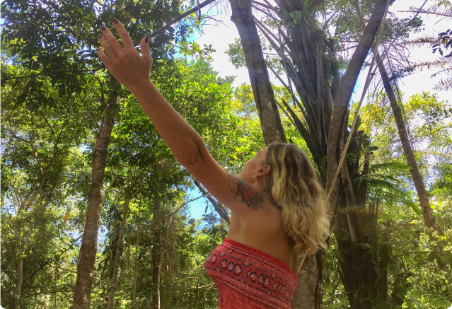
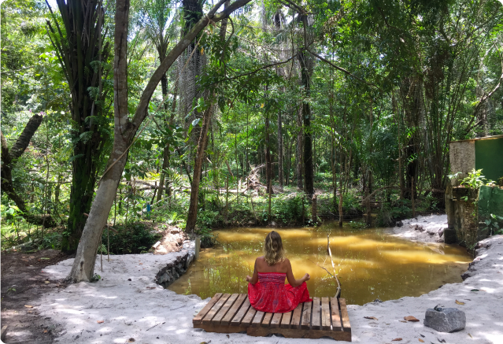

RELAXE EM UM LUGAR MÁGICO - DESFRUTE DO BANHO DE FLORESTA
Bem-vindo ao nosso refúgio tranquilo! Aqui, oferecemos a oportunidade de revitalizar seu corpo e mente com a medicina do banho de floresta.
Acreditamos no poder curativo da natureza e nas propriedades terapêuticas encontradas nas essências aromáticas livres na atmosfera das florestas. Ao entrar em contato com elas, você será transportado para um estado de calma profunda, ativando seu sistema límbico através do sentido do olfato. Além disso, nossa localização isolada da agitação urbana oferece um ambiente livre de carros e multidões, permitindo que você se desconecte do estresse diário e encontre um momento de paz interior. Aqui, você poderá recarregar suas energias, liberando aquelas que estão em desequilíbrio e respirando livremente novamente. Venha se perder na beleza da natureza e mergulhe em um banho de floresta revitalizante. Reserve agora mesmo e comece uma jornada de renovação e relaxamento profundo.
PRATICAS HOLÍSTICAs:
Compartilhando Experiências Positivas
Em cada apartamento, dedicamos um espaço para um pequeno altar, onde você pode acender um incenso ou uma vela, ler uma oração, uma frase ou um mantra, ou simplesmente fechar os olhos e relaxar por 15 minutos, sem fazer absolutamente nada.
Em cada apartamento, dedicamos um espaço para um pequeno altar, onde você pode acender um incenso ou uma vela, ler uma oração, uma frase ou um mantra, ou simplesmente fechar os olhos e relaxar por 15 minutos, sem fazer absolutamente nada.
Em cada apartamento, dedicamos um espaço para um pequeno altar, onde você pode acender um incenso ou uma vela, ler uma oração, uma frase ou um mantra, ou simplesmente fechar os olhos e relaxar por 15 minutos, sem fazer absolutamente nada.
Em cada apartamento, dedicamos um espaço para um pequeno altar, onde você pode acender um incenso ou uma vela, ler uma oração, uma frase ou um mantra, ou simplesmente fechar os olhos e relaxar por 15 minutos, sem fazer absolutamente nada.
Em cada apartamento, dedicamos um espaço para um pequeno altar, onde você pode acender um incenso ou uma vela, ler uma oração, uma frase ou um mantra, ou simplesmente fechar os olhos e relaxar por 15 minutos, sem fazer absolutamente nada.
Banho de Floresta

Meditação da Floresta (leve sua canga ou tapete de palha)
10 minutos - Fique descalço - Caminhe devagar entre as arvores
5 minutos - Descarregue numa pedra seus pensamentos e depois devolve na terra a pedra
10 minutos - Balance ou Dance ou Fique em pe imaginando que é uma arvore - Que arvore voce é? (visualize)

25 minutos - Fique sentado com olhos fechados em silencio, observe respiração - Pensamentos são como nuvens
10 minutos - Deite e relaxe
( Abraçando a luz na sustentação do Sonho da Terra) Terapeuta sensitiva Atua na área holística a 20 anos .
Formação em Danças Circulares Sagradas, Constelação Familiar . Tendo o Xamanismo como um resgate de sua alma. Integrante do Conselho das Anciãs das 13 luas.
( Recebendo formação através de @awaraniritosancestrais )
Toque terapêutico
Alinhamento dos chakras com som do tambor, Orgonites
Crânio sacral
Mandala do Ser .
Roda de cura com as cartas do Caminho Sagrado
Todos os atendimentos incluem uma receita de florais de Saint Germain .